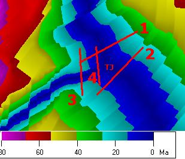
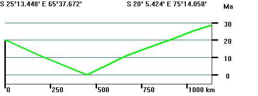
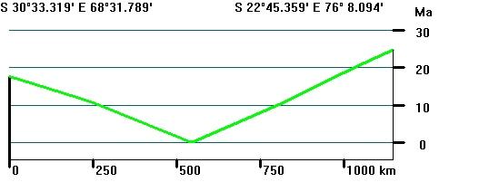
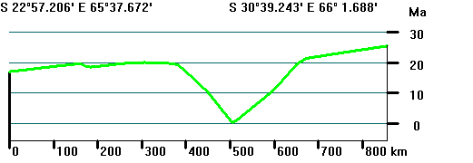
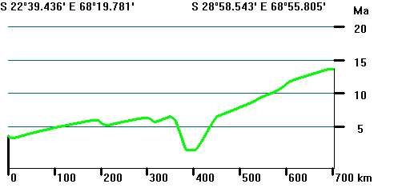

 |
Map of interpreted ages around the Indian Ocean
triple junctions, from the  Predicted sea floor
ages of MÜLLER and others. Predicted sea floor
ages of MÜLLER and others.Small TJ marks the triple
junction, in the center of the 0 age crust.
Four profiles across
the three ridges indicated, and are discussed below.
 Topographic Profiles
Topographic Profiles
|
 |
Profile 1 crosses the ridge between Africa and India.
Symmetrical spreading with constant velocities back to 20
Ma, indicated by the uniform slopes. |
 |
Profile 2 crosses the ridge between Antarctica and
India. Symmetrical spreading with constant velocities
back to 20 Ma, indicated by the uniform slopes. |
 |
Profile 3 crosses the ridge between Antarctica and
Africa. Symmetrical spreading with constant velocities
back to 20 Ma, indicated by the uniform slopes. On the
north (left side) side, the slope reversal at about 400
km indicates that the crust between 0 and 400 km actually
was produced by a different ridge, which is located to
the east. The low slope there indicates that the profile
is no longer perpendicular to the direction of the
second ridge. The slope change at 650 km either
indicates the same process, or a change in spreading
rate.
|
 |
Profile 4 crosses the ridge between Antarctica and
Africa. Note that there is no zero age crust here, so
close to the triple junction this ridge segment currently
does not appear to be spreading. On the north (left side)
side, the slope reversal at about 350 km indicates that
the crust between 0 and 350 actually was produced by a
different ridge. The stairsteps at 200 km and 320 km
indicate crossing of fracture zones. |